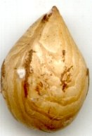
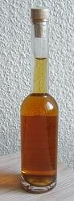

|
| Wie wird die Haselnuss genutzt?
Die Samen der Haselnüsse sind essbar. Geröstet schmecken sie besonders gut.
Sie eignen sich gut zum Backen und zur Herstellung von Nuss-Nougat.
 |  Die Samen enthalten viel Öl. Dieses Öl wird in der Küche verwendet.
|